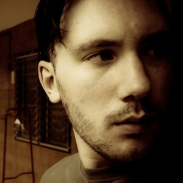

 I am Alexander Synaptic, a designer, developer, and photographer, among other things. I also work with music as a DJ, record label owner, and distributor. I am currently bootstrapping my “accidental” startup in Taipei, Taiwan.
Like many children of the 1980s I have an eclectic range of interests and experiences. I have applied myself to many different domains, from the creative arts to science and technology. I possess a fierce intellect and live for culture, conversation, and adventure. My tendency is to dive deep with whatever I am doing, whether it is learning new skills or meeting new people. I know a lot about many different subjects and love to share what I have learned. I am a generalist, an integrative thinker, someone who connects the dots between disparate domains.
I love to travel, particularly by bicycle, and follow a minimalist lifestyle. I support free culture, open source software, and the Creative Commons. I studied evolutionary biology and physical geography in university.
Entrepreneurship
I am currently bootstrapping my “accidental” startup in Taipei, Taiwan. During university my music blog became quite popular so I started a crowdfunding campaign to see if there was support to transform it into something more. There was! And now I am deeply engaged in realizing my vision of a forward-thinking independent music distribution platform. Moving to Taiwan is part of the plan—here I can be productive without burning through a lot of money. It is also an extraordinary adventure living the expat lifestyle in this beautiful foreign land!
Travel
I have always wanted to the world but didn't act on that dream until graduating from university in 2011. In 2012 I visited Asia for the first time, landing in Hong Kong for a brief visit before moving on to Thailand for two troubled months and one week in Seoul on the way home. This trip changed me; I became restless with wanderlust and soon returned to Asia for another round, visiting Malaysia, Singapore, and Taiwan in early 2013.
Through these experiences I discovered that I would much rather stay in one place for a while rather than move around a lot, unlike many “location-independent” minimalists. After carefully weighing my options I decided to move to Taiwan in May 2013 to get a feel for the expatriate lifestyle, blurring the lines between travelling and simply living overseas. After getting to know Taiwan's capital, Taipei, I went on a 27 day bicycle trip around the entire island, outracing typhoons, exploring industrial ruins, getting in touch with local culture, and testing my personal limits.
Read about some of my travels on my blog:
Here are some of the places I have been in the last couple of years:
- 2014: Taiwan, Hong Kong (again).
- 2013: Sabah, Kuala Lumpur, and Melaka, Malaysia; Singapore; all around Taiwan; and Okinawa, Japan.
- 2012: Hong Kong; Thailand; Seoul, South Korea.
Photography
My photography primarily focuses on dreamlike landscapes, abandoned places, and the intersection of the natural and artificial forces that shape our world. I am diligent about geotagging my work and releasing it all under a Creative Commons license as a way of contributing to free culture. I also maintain a library of free Lightroom presets on Github. Read this overview of my photography or check out my newest work on Flickr.
Minimalism
I am a minimalist and a digital nomad. I own very little and derive value from experiences rather than material wealth. I am location-independent, meaning that I can live and work pretty much anywhere, but I prefer to stay in one place for a while.
I was inspired to follow this lifestyle by the likes of Leo Baubuta, Tim Ferriss, Chris Guillebeau, whose books and blogs I encountered in the late 2000s. The movement, if there ever was one, broke apart shortly after formation, and I have been working with the lessons learned to forge my own individual path, a form of minimalism that works for me.
Education
I earned a Bachelor of Science with honours from the University of Toronto, Woodsworth College, 2007-2011. I double-majored in two split programs, making my degree quite the tongue-twister: ecology/evolutionary biology and physical/environmental geography. I was on the Dean's List every year and won numerous scholarships and awards including the NSERC Undergraduate Student Research Award in 2009. I worked on two major research projects in the paleoclimate laboratory and learned how scientists reconstruct past environments from biological proxy data, primarily pollen and peat cores.
Free culture
I am devoted to free culture, open source software, and the Creative Commons. Almost all of my photography is released under Creative Commons licenses, as are all of the releases on my netlabels.
In the mid-2000s my thinking was highly influenced by Free Culture and Remix) by Lawrence Lessig, The Long Tail and Free by Chris Anderson), Better Than Free by Kevin Kelly, and various articles by Clay Shirky. I decided to put what I had learned into practice by blogging about free music. Eventually this blog became quite a success, a story chronicled in a beginner's guide to Ektoplazm.
To be continued…